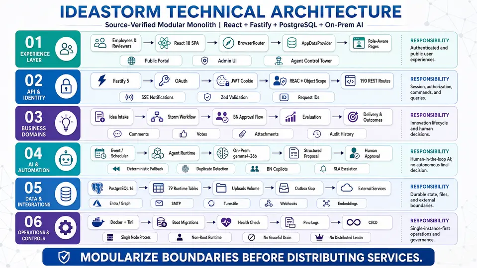
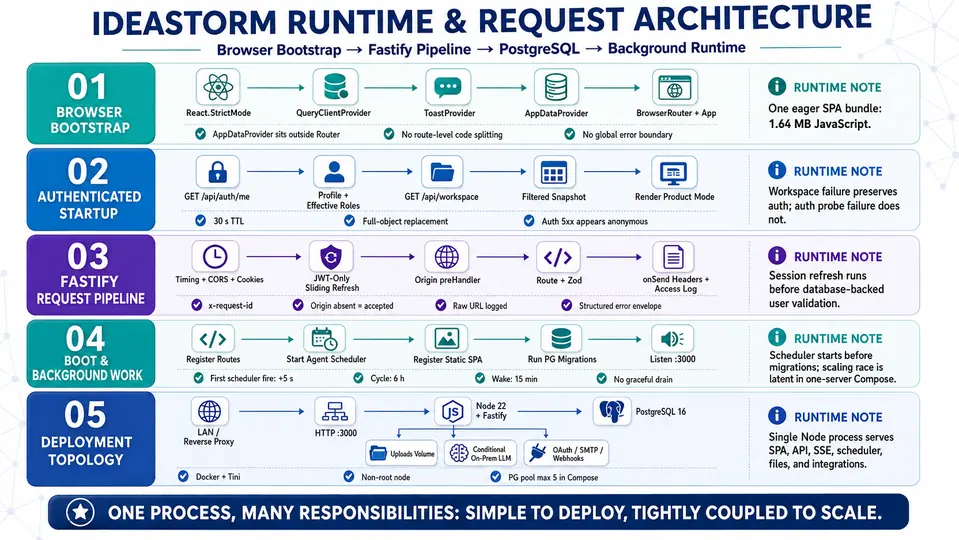
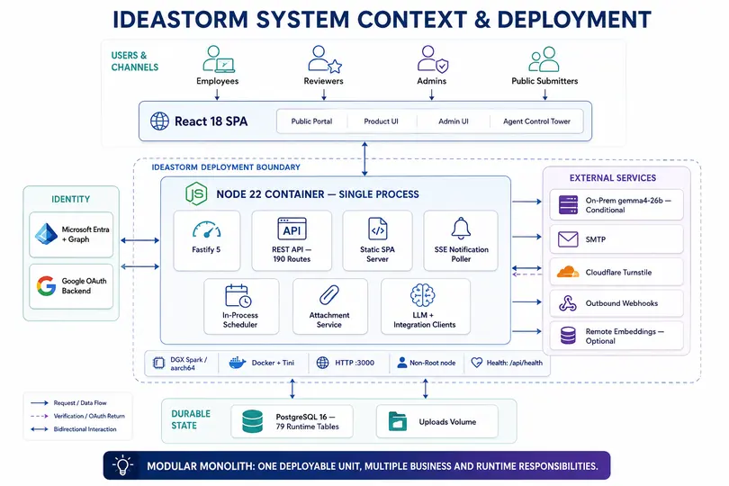
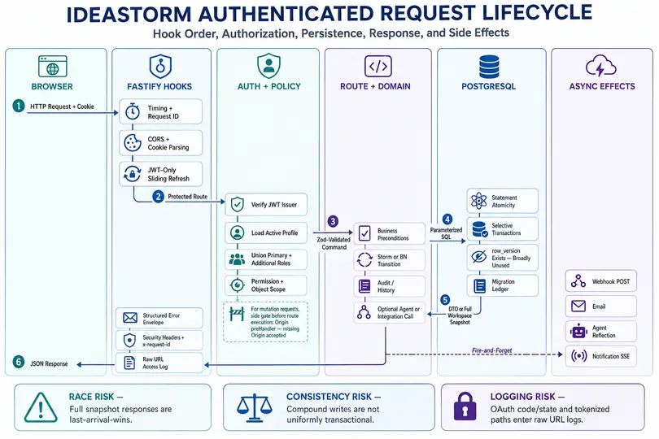
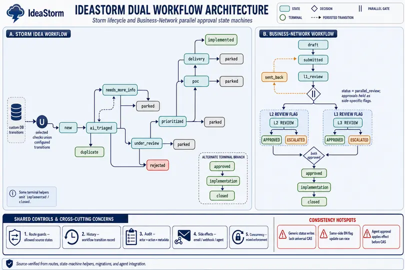
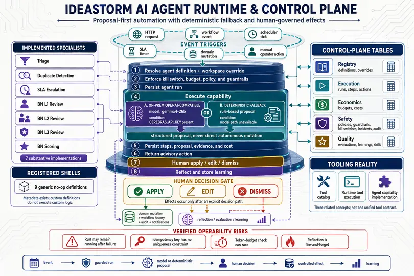
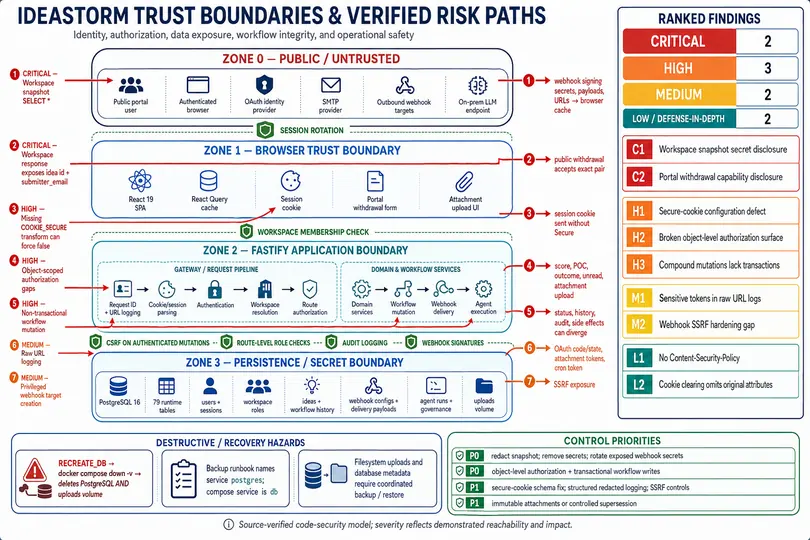
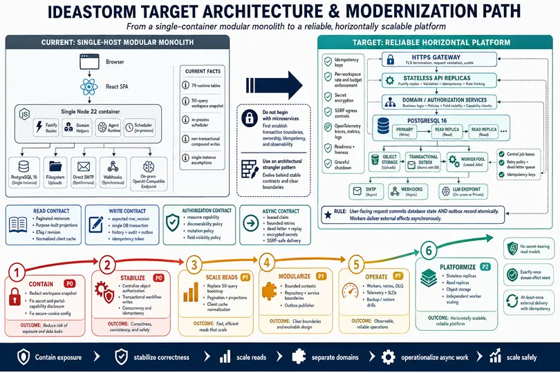

Personal ownership
Not established from the supplied archive.
Agentic AI & automation
Code-derived architectureAn enterprise idea-to-outcome platform with AI triage, duplicate detection, governed agents, human review, POC tracking and ROI evidence.

A scheduler and event plane coordinate specialized agents behind policy, budget, guardrail and kill-switch gates, with deterministic fallback and human approval.
23 meaningful samples · 1 empty retained
14.8 MB ZIP · public evidence mapSHA-256 99cef840603b64a7…
Engineering evidence
Primary flow
Attribution and proof boundary
Not established from the supplied archive.
Not established from the supplied archive.
Inline sanitized evidence
Excerpted from source/sample-01.ts inside the already-sanitized public ZIP. Static review only; the code was not executed.
import { config } from './config.js';
import { makeTraceId } from './shared.js';
// Single provider. The slug stays 'cerebras' for back-compat with stored
// model_provider values + the modules that read it, but it resolves ONLY to
// the on-prem gemma4-26b endpoint (config.CEREBRAS_*). No other LLM exists.
export type LlmProvider = 'cerebras';
export interface ChatResult {
provider: LlmProvider;
model: string;
content: string;
usage?: { input_tokens: number; output_tokens: number; total_tokens: number };
latencyMs: number;
}
/** Why the last chat() call degraded to the deterministic fallback. Kept in
* memory so ops can see WHY the model isn't answering (previously every
* failure was swallowed silently → ~80% of runs fell back invisibly). */
export interface LlmFallback {
reason: string;
status?: number;Architecture image pack
The executive architecture is surfaced first. Open the remaining runtime, context, lifecycle, data, workflow, AI-control, trust and roadmap views when deeper review is useful. All nine remain embedded in the ZIP.
Supplied IdeaStorm image pack
Lightweight WebP previews are shown here; every link opens the original full-resolution PNG, and all originals remain in the downloadable package.

Original reference view 01 ↗
Original reference view 02 ↗
Original reference view 03 ↗
Original reference view 04 ↗Original reference view 05 ↗
Original reference view 06 ↗
Original reference view 07 ↗
Original reference view 08 ↗
Original reference view 09 ↗Anonymized source evidence
Open the public claim-to-sample evidence map →
source/sample-01.tsMeaningful sample · 8 KBsource/sample-02.tsMeaningful sample · 9 KBsource/sample-03.tsMeaningful sample · 10 KBsource/sample-04.tsMeaningful sample · 22 KBsource/sample-05.tsMeaningful sample · 48 KBsource/sample-06.jsonMeaningful sample · 472 Bsource/sample-07.jsonMeaningful sample · 578 Bsource/sample-08.jsonMeaningful sample · 628 Bsource/sample-09.txtMeaningful sample · 980 Bsource/sample-10.txtMeaningful sample · 1 KBsource/sample-11.txtMeaningful sample · 2 KBsource/sample-12.jsonMeaningful sample · 3 KBsource/sample-13.pyRetained empty placeholder · 0 Bsource/sample-14.tsMeaningful sample · 169 Bsource/sample-15.tsMeaningful sample · 232 Bsource/sample-16.tsMeaningful sample · 407 Bsource/sample-17.tsMeaningful sample · 419 Bsource/sample-18.tsMeaningful sample · 427 Bsource/sample-19.tsMeaningful sample · 532 Bsource/sample-20.tsMeaningful sample · 569 Bsource/sample-21.tsMeaningful sample · 617 Bsource/sample-22.tsMeaningful sample · 664 Bsource/sample-23.tsMeaningful sample · 668 Bsource/sample-24.tsMeaningful sample · 684 BPublic controls